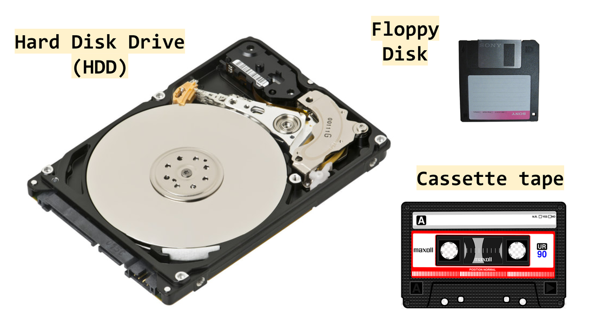
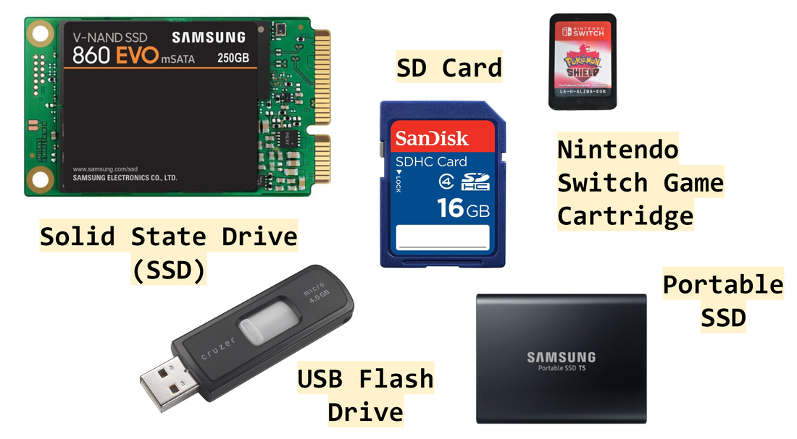
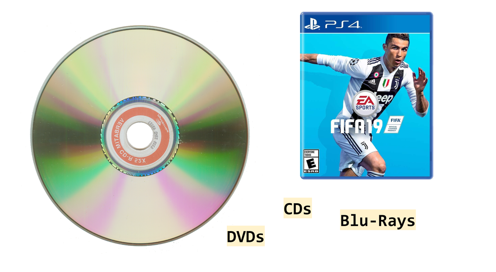

mrahmedcomputing
KS3, GCSE, A-Level Computing Resources
Lesson 5. Storage
Lesson Objective
- Explain how Magnetic, Solid State and Optical Storage funtions.
- State the advantages and disadvantages of Magnetic, Solid State and Optical Storage.
- Know what cloud storage is and name some advantages and disadvantages.
- Understand the factors that affect the choice of storage devices.
Lesson Resources
Lesson Quiz
Lesson Presentation
Select the presentation, the press "f11" to enter full screen mode
Lesson Notes
Storage Devices
Refers to any hardware component that stores data long term. Data on storage devices are not lost when the power is turned off.
The 3 main types of storage are:
- Magnetic - Hard Disk Drives
- Solid State - Solid State Drives, USB Flash Drives
- Optical - CDs, DVDs, Blu-Ray
Magnetic Storage
A magnetic disk drive consists of a number of platters (disks) coated in a magnetic material. The data is encoded into bits and written onto the surface as a series of changes in the direction of the magnetisation. Data is stored in small areas on the disk called sectors. A "metal arm" is used to read and write to the disk.
HDD Advantages
- Cheaper than Solid State
- Higher capacity than Solid State
- Longer read/write cycle than Solid State
Examples:
Solid State Storage
Solid-state storage (SSS) refers to a type of non-volatile computer storage that stores and retrieves digital information using only electronic circuits, without any involvement of moving mechanical parts.
Most solid-state storage devices use NAND flash memory, which is electrically programmable and non-volatile.
SSD Advantages
- Faster than HDDs
- Does not need to be defragmented
- Shockproof
- Makes basically no noise
- Low power consumption
Examples:
Comparing Magnetic (HDD) and Solid State (SSD) Storage
- Price: SSDs are about 10 times more expensive than HDDs per MB
- Power: HDDs uses about 3 times more battery power than SSDs
- Capacity: SSDs are generally no larger than 512 GB but HDDs go up to 4 TB
- Speed: SSDs are almost twice as fast at loading up and copying files
- Noise: SSDs are silent whereas HDDs make spinning disc sounds
- Reliability: Both are highly reliable forms of storage but the magnetic disc is more vulnerable to knocks as it has moving parts
Optical Storage
Storage on disks. Data is read using a laser. Data is stored on small indentations (data pits) on the shiny surface of the disk.
Advantages
- Cheap
- Portable
Disadvantages
- Low storage capacity
- Easily damaged
Examples:
AQA Mark Scheme - How is works?
- The tracking mechanism moves the laser into the correct position over the CD;
- The CD is spun to ensure all data can be read;
- The CD spins slower when the laser/read-head is above the outer tracks;
- The laser is shone on to the disk;
- The laser is reflected;
- Bumps/pits are raised parts of the disk;
- Bumps/pits form a spiral from the centre to the outside of the disk;
- A (opto-electric) sensor detects changes in reflectivity;
- Bumps/pits and lands represent the two possible bit values
Cloud Storage
The "Cloud" refers to software applications and data are held on a remote server on the Internet. It is typically accessed using a Web browser such as Chrome or Edge.
Examples:
- Google Drive
- One Drive
- Dropbox
- iCloud
Advantages of Cloud Storage
- Access files from any connected device.
- Files can be shared easily.
- Easy to increase storage.
- Backing up data is no longer crucial, it is done by the service provider.
- Service provider also provides security.
- Can store data for free - Limit.
- Does not require expensive hardware.
Disadvantages of Cloud Storage
- Need an Internet connection.
- Upload/download speed depends on bandwidth.
- Dependent on host for security and back-ups.
- Data can be vulnerable to hackers.
- Unclear who owns the cloud data.
- Subscription fees may be expensive - Long term.
Factors that affect the choice of storage
- Cost
- Storage Size
- Physical Size
- Performance
- Reliability